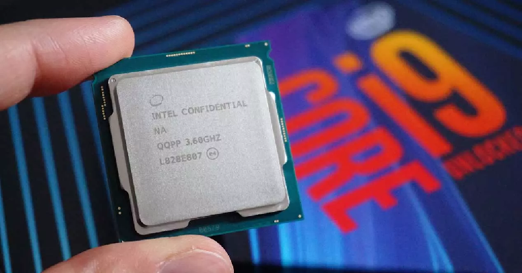

Elije tus componentes
Indice
- Procesador
- 1.1. Núcleos e hilos
- 1.2. Overclock
- 1.3. Gráficos integrados
- Placa base
- 2.1. Socket y chipset
- Memorias RAM
- Tarjeta gráfica
- Almacenamiento
- 3.1. Discos mecánicos
- 3.2. Discos SSD
- Refrigeración
- 4.1. Disipadores de aire
- 4.2. Refrigeración líquida
El primer paso para montar un PC en condiciones siempre es escoger unos buenos componentes acorde a tus necesidades para que nunca te falte la potencia que necesitas en tu día a día y tampoco malgastes tu dinero. Es por ello que CustomLoopPc te trae un tutorial el cual te ayudará a escoger los componentes de tu futuro PC. Desde el procesador, pasando por la placa base hasta el sistema de refrigreación, todo viene bien explicado para que aquellas personas que se sienten perdidos sepan que componentes montar en su nuevo PC y poder tener la experiencia de montar su PC personal totalmente funcional y a su gusto.
Con este tutorial aprenderás a escoger los diferentes componentes para tu PC dependiendo de tus necesidades y de lo más importante, tu bolsillo. No cometas el error de comprar componentes que no son compatibles, tener un hardware desbalanceado o de mala calidad los cuales a la larga te acabaran dando problemas.
1. El procesador
Antes de escoger un procesador un otro, la pregunta más importante que uno se puede hacer es ¿qué necesidades tengo?. Dentro de AMD o Intel hay diferentes gamas de procesadores, destinados a diversas tareas. Si vas a realizar tareas de ofimática la mejor opción es un procesador de gama baja como un i3 o un ryzen 3 además de las APU de AMD. Pero si queremos pasar a tareas más exigentes, los ryzen 5 e i5 son los reyes de la gama media, ofreciendo un gran rendimiento en videojuegos. Por otro lado, para tareas más exigentes, podemos pasar a las opciones más pontentes como los i7 e i9 o los ryzen 7 o ryzen 9, sin olvidar las bestias de AMD, sus Threadripper
1.1. Nucleos e Hilos
Sin obsesioanrte con este dato, es algo a valorar. Pero no debe condicionarte si solo buscas un PC para ofimática básica. A más núcleos e hilos, mejor es un procesador. Pero como en muchos casos se ha visto, esto no es siempre así y puede que un procesador con 4 nucleos sea igual o un poco mejor que el procesador de 6 nucleos. Aun así, no todos los procesador con el mismo número de núcleos disponen de la misma cantidad de hilos y generalmente es más interesante un procesador con más hilos que nucleos. A su vez el número de núcleos e hilos puede ser un indicativo de la gama del propio procesador.
1.2. Overclock
El overclock consiste en subir las frecuencias del procesador para ganar algo más de rendimiento pero, ¿realmente es allgo que merezca la pena?. No siempre, a veces sale más a cuenta realizar un undervolt. Pero en caso de querer realizar esta técnica, es importante escoger un procesador desbloqueado como los k de Intel y tener un buen sistema de refrigeración con el que disipar el calor ya que, cuanta más subas la frecuencia y el voltaje, mayor será el calor y el consumo.
1.3. Gráficos integrados
No todos los procesadores cuentan con gráficos integrados como es el caso de los procesadores Ryzen. Por ello hay que analizar bien lo que queremos y escoger el procesador adecuado. Por lo general, AMD con sus APU ofrecen mejores gráficos integrados que los propios procesadores de Intel, siendo estos los Ryzen 3 3200G y los Ryzen 5 3400G
2. La placa base
La placa base está condicionada por el procesador que escojamos. Dependiendo de este tendremos que escocger un chipset y socket distintos y obviamente debe ser equivalente al procesador seleccioando, es decir, cuanto mas potente sea nuestro procesador, mejor preparada deberá de estar nuestra placa base para evitar problemas. Un punto en el que hay que fijarse relacionado con este aspecto son las fases de alimentación. Cuanto más potente es nuestro procesador, más consumirá y por ende necesitará un numero mayor de fases de alimentación y de mejor calidad. Es por ello que un chipset de gama alta es adecuado para procesadores de gama alta. Por otro lado, es esencial tener en cuenta la conectividad que estas ofrecen para no quedarse corto y tener siempre los conectores que nuestro equipo va a necesitar.
2.1. Socket y chipset
La parte más importante a la hora de escoger placa base es seleccionar un chipset y socket. Actualmente, los procesadores de AMD utilizan el socket AM4 y TR4 en el caso de los Threadripper. En cuanto a Intel, desde la 10ª generación tenemos el socket LGA 1200, siendo el LGA 1155 su predecesor.
Cuando hablamos del chipset, la cosa se complica más, llegando a crear confusión. Dependiendo de la generación, los procesadores usarán unos u otros. Estos chipset se dividen en gamas siendo la más baja-media A (AMD) y H (Intel), los de gama media B (AMD) y los de gama alta los X (AMD) y Z (Intel).
3. La memoria RAM
La memoria RAM actua como intermediario entre el disco duro y nuestro procesador. Es por ello que el tener poca memoria RAM puede ser un limitante a la hora de realizar nuestras tareas del dia a dia. Seleccionar este componente es sencillo. Dependiendo de la tarea vas a necesitar más o menos cantidad de RAM. Actualmente, tener 8GB de memoria RAM es lo ideal para tareas de ofimática y videojuegos no tan exigentes, pero si queremos un buen desempeño y evitar problemas la mejor idea es optar por 16GB. Aunque si vamos a realizar tareas pesadas como edición de video, deberiamos optar por 32GB para evitar problemas con los programas que utilicemos para estas tareas. En cuanto a la frecuencia, los 2400MHz es lo ideal para procesadores Intel, siendo 3200MHz para procesadores AMD. Por ultimo, deberemos tener una configuración en dual channel o quad channel para sacar algo más de rendimiento a nuestra memoria.
4. La tarjeta gráfica
La tarjeta gráfica será la encargada de dibujar lo que ves en pantalla y realizar otro tipo de tareas. Está debe ser equivalente al procesador, es decir, no combinar procesadores de gama baja con tarjetas gráficas de gama alta y viceversa.
En este caso tenemos las gráficas de Nvidia y AMD, las cuales podemos organizarlas según su potencia en base a la nomenclatura siendo por ejemplo la 1030 una gráfica de gama baja, pasando por la 1060 de gama media hasta la 1080 de gama alta.
5. El almacenamiento
Podemos optar por distintos medios de almacenamiento desde los discos duros de toda la vida hasta los ssd más rapidos pero ¿cual escojemos?. Cuando se busca una alta capacidad de almacenamiento, la opción mas asequible es optar por un disco duro mecánico. En cambio, cuando queremos optar por velocidad a la hora de escribir o leer la mejor opción es un ssd. Actualmente el tener un ssd donde almacenar como mínimo el sistema operativo favorece a una mayor agilidad del equipo.
5.1. Discos mecánicos
Cuando buscamos discos duros mecánicos, la mejor opción para un equipo de sobremesa son discos con una velocidad de giro de 7200rpm, siendo más rapidos que los discos duros instalados en portatiles. Por otra parte podemos encontrar diversos tipos de discos duros dependiendo de su uso. Para un usuario normal, los Seagate Barracuda Green o Wester Digital Blue son más que aptos y asequibles para las tareas del dia a dia
5.1. Disco SSD
Si lo que queremos es velocidad, si duda debemos acudir a un disco ssd. Encontraremos ssd sata con formato 2,5 los cuales nos ofreceran tasas de lectura y escritura de hasta 550 MB/s.
Por otro lado, tenemos los ssd más rapidos, llegando a alcanzar tasas de 2500MB/s o más de lectura y escritura utilizando la interfaz PCI-E mediante los puertos M.2 o PCI-E de tu placa base. Los discos ssd más rapidos pueden verse beneficiados del PCI-E 4.0, aunque esto, obviamente, encarece su precio.
6. La refrigeración
Podrás tener el PC con los mejores componentes del mercado, pero poco hará si no somos capaces de disipar todo el calor que este genere. Para ello utilizamos disipadores y ventiladores, pasando tambien por la refrigeración líquida. Estos podrán mantener tus componentes frescos con la ayuda de una buena caja o gabinete que permita el paso del aire con normalidad junto con buen flujo del mismo. Estos sistemas deben ser acompañados por una pasta térmica de calidad que permita una correcta transferencia del calor entre el componente y la base del disipador.
6.1. Disipadores de aire
La opción más básica y barata es utilizar disipadores de aire, pero el ser la opción más barata no significa que sea la peor. Podemos optar por disipadores tan eficientes que se pueden comparar con algunos kits de refrigeración líquida aio. Estos simplemente constan de un radiador o bloque que con ayuda de uno o varios ventiladores son capaces de disipar todo el calor.
6.2. Refrigeración líquida
Las refrigeraciones líquidas se valen del mismo principio que el de un disipador convencional, con el agregado de tener un liquido refrigerante capaz de llevar el calor al radiador. Estos sistemas suelen ser más eficientes que un disipador por aire, aunque tambien suelen presentar fallos con más facilidad y requerir de algo más de mantenimiento. Podemos encontrar sistemas aio u all in one ya ensamblados y listos para ser instalados o sistemas custom, los cuales pueden ser configurados por el propio usuario hasta el más minimo detalle y ser más eficientes que una kit aio.